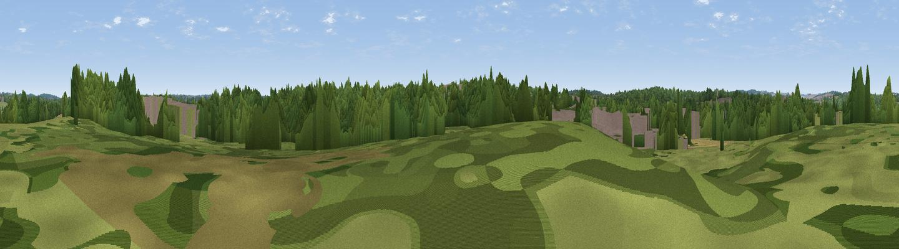

Bonfire Hill
#45760 in England · top 97% of its area beats it · near Alderholt · path 89 mWhere it is
The exact computed spot (SU 12539 13036). Click the marker for map links.
Public access: the nearest public right of way is about 89 m away — the final stretch may cross private land. Computed from Natural England's CRoW access layer and OpenStreetMap rights of way — not the legal definitive map. Always verify locally.
The view, rendered

A 360° render of this exact spot computed from the terrain model, tree cover and land cover — summer colours, afternoon light, calibrated against photographs of famous viewpoints. Real trees, hedges and buildings will differ in detail.
The panorama
Grey silhouette: terrain skyline in each direction (720 bearings, Earth curvature and refraction included). Dashed green: skyline with trees (+15 m) and buildings (+8 m) as obstacles. Blue strip: how far the ground is visible on each bearing.
Where the view opens
Wedge length = distance to the farthest visible ground on that bearing (vegetation-aware). Rings at 10, 25 and 50 km.
What fills the view
56% woodland · 31% grassland · 9% built-up · 5% cropland
Angular shares of the visible panorama (visual magnitude), not map area. Landscape diversity 0.45 (0–1 Shannon).
Key numbers
More beautiful places nearby
The staircase of upgrades: each row has a higher view potential than everything closer. Driving times are estimates from straight-line distance, calibrated against real road routing — check an actual route before setting out.
| Place | Direction | Drive | Score |
|---|---|---|---|
| Viewpoint near Damerham | NW · 3 km | ~7 min | 19.7 |
| Viewpoint near Verwood | SW · 5 km | ~11 min | 30.5 |
| Viewpoint near Ibsley | SE · 6 km | ~12 min | 34.5 |
| Viewpoint near Frogham | E · 6 km | ~12 min | 40.2 |
| Damerham Knoll | NNW · 6 km | ~13 min | 40.5 |
| Viewpoint near Martin | NW · 8 km | ~16 min | 45.5 |
| Viewpoint near Martin | WNW · 9 km | ~18 min | 64.6 |
| Viewpoint near Cranborne | WNW · 9 km | ~18 min | 65.0 |
50.91665, -1.82300 · source: osm peak · position refined by local search. Computed location — check access rights before visiting.